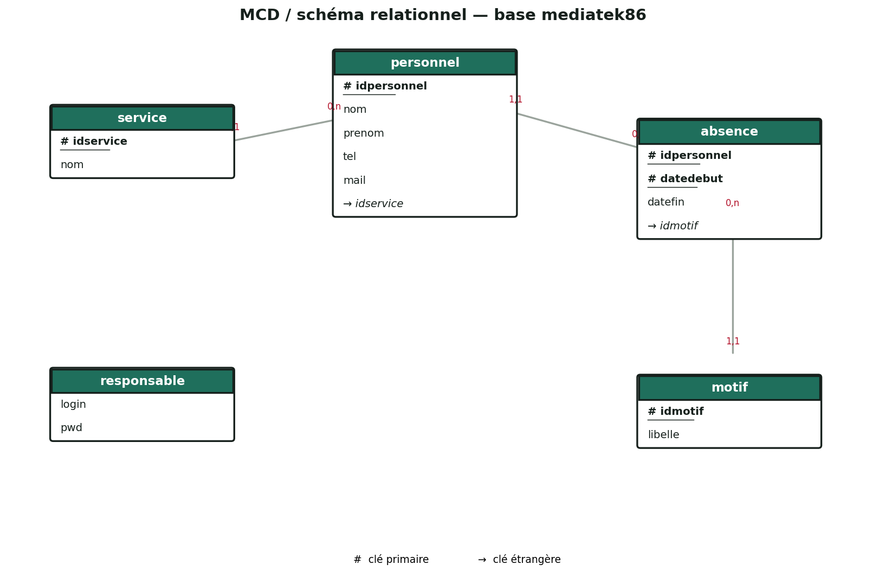

Application de bureau pour la gestion du personnel et des absences du réseau des médiathèques de la Vienne.
MediaTek86 est un réseau qui gère les médiathèques de la Vienne : il fédère les prêts de livres, DVD et CD et développe la médiathèque numérique du département. En tant que technicien développeur junior pour l'ESN InfoTech Services 86, il m'a été confié le développement d'une application de bureau monoposte, installée au service administratif.
Cette application permet au responsable du personnel de gérer le personnel de chaque médiathèque, son affectation à un service, ainsi que ses absences. Elle reprend la logique, la structure en packages et la classe de connexion de l'application Habilitations.
La base mediatek86 repose sur cinq tables : service, motif, personnel, absence et responsable (connexion à l'application).

Documentation utilisateur sous forme de vidéo (5 minutes) : démonstration de toutes les fonctionnalités de l'application avec explications orales.